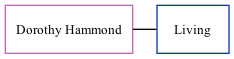

Dorothy P Cowell (née Hammond)
[ Home ] | [ Calendar ] | [ Surnames Index ] | [ Family History ]Dorothy Hammond, the wife of Maurice J Cowell (the second cousin on the mother's side of Nigel Horne), and married Maurice in Chichester, Sussex, England around Feb 19581.
Citations
- England & Wales marriages 1837-2008 - Findmypast
Media
England & Wales marriages 1837-2008 - BMD/M/1958/1/AZ/000656/038
Family Tree
Generated by ged2site. Last updated on Nov 13, 2024